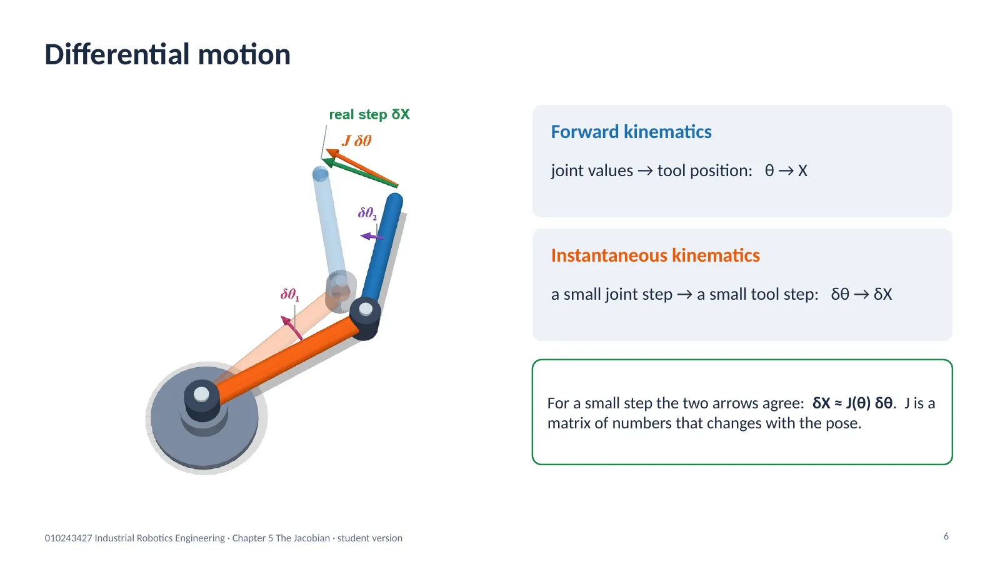
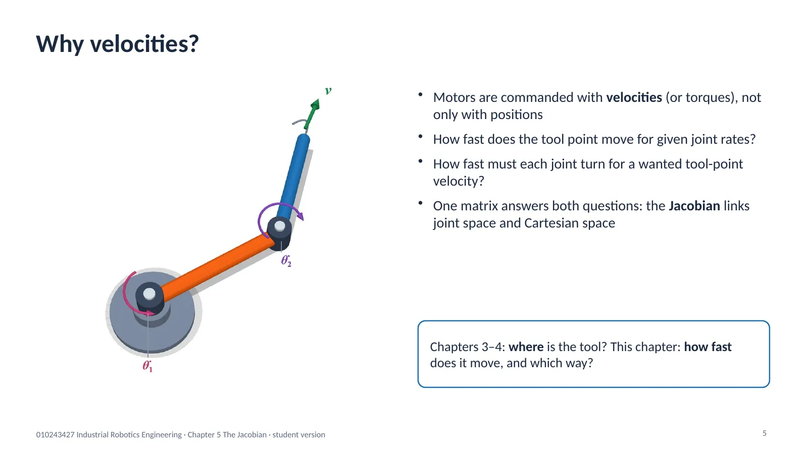
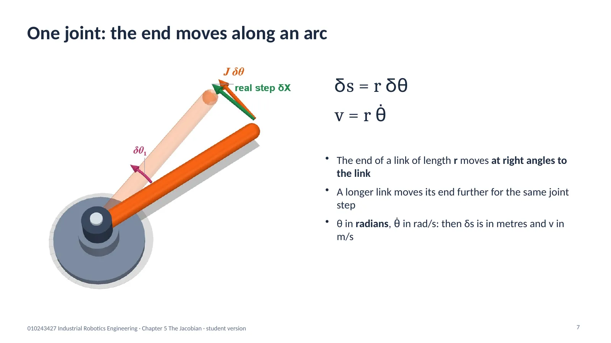
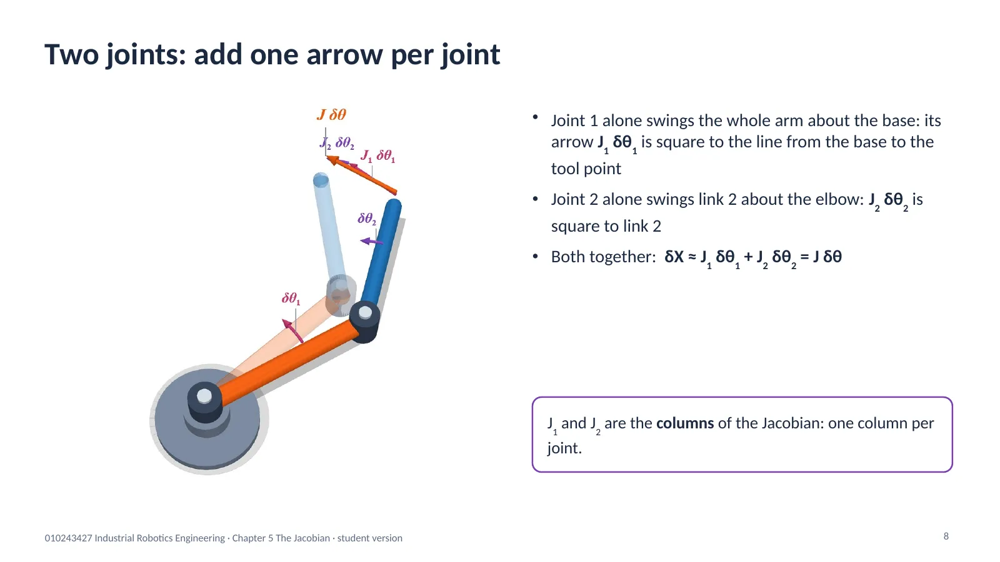
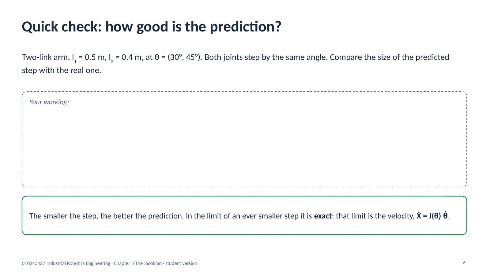

บทที่ 3–4 ตอบว่าปลายแขนอยู่ที่ไหน บทนี้ถามว่าปลายแขนเคลื่อนที่เร็วแค่ไหนและไปทางไหน เมื่อข้อต่อขยับ จุดเริ่มคือการขยับข้อต่อทีละนิด (δθ) แล้วดูว่าปลายแขนขยับเท่าไร (δX): ข้อต่อแต่ละตัวให้ลูกศรหนึ่งอัน บวกกันได้ก้าวของปลายแขน และยิ่งก้าวเล็ก ค่าที่ทำนายยิ่งตรงกับของจริง หน้านี้ครอบคลุมสไลด์หน้า 5–9 มี เครื่องมือ 1 ชิ้น (A) และ 3 โจทย์
Chapters 3–4 tell where the tool point is. This chapter asks how fast it moves and which way when the joints move. We start with a small step of the joints (δθ) and watch the step of the tool point (δX): every joint gives one arrow, the arrows add up to the step of the tool point, and the smaller the step, the better the prediction. This page covers slides pp. 5–9, with one tool (A) and 3 problems.

แขนทึบคือท่าปัจจุบัน แขนโปร่งแสงคือท่าหลังขยับข้อต่อไป δθ ลูกศรสีเขียวคือระยะที่ปลายแขนขยับจริง ลูกศรสีส้มคือค่าที่ทำนายด้วย J δθ ลองลดขนาดก้าวลง: สองลูกศรจะทับกัน แล้วลองเพิ่มเป็น 30°: ลูกศรสีส้มยังเป็นเส้นตรง แต่ปลายแขนจริงเดินตามส่วนโค้ง
The solid arm is the present pose, the see-through one the pose after the joints have stepped by δθ. The green arrow is the real step of the tool point, the orange one the prediction J δθ. Make the step smaller: the two arrows fall on each other. Then make it 30°: the orange arrow is still a straight line, while the real tool point goes round a curve.


